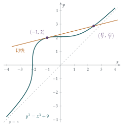

STEP I 2009，第 2 题
继续之前，请先阅读题目（原题为英文）。题目载于 STEP Support Programme 的题目资料库： step.maths.org/questions/09-s1-q2
引子
这题看来只是一道例行的坐标几何（coordinate geometry）题：求导、找切线、解三次方程。可是最后一行却要你找出一个立方数，它是另外三个立方数之和，而几何竟像变魔术一样把它变了出来。
这个窍门是过曲线上一个已知点作直线，从而找出新的点，它可追溯至公元三世纪亚历山大港的丢番图（Diophantus）。到了现代数学家手上，它发展成椭圆曲线（elliptic curves）的理论。这套理论位于当今数论的核心，是费马最后定理（Fermat’s Last Theorem）证明的基础，也保障着全球一大部分互联网通讯的安全。
动笔之前
点 \((-a, b)\) 在曲线上。为甚么？这跟立方和又有甚么关系？
代入：\((-a)^3 + a^3 + b^3 = b^3\)，所以确实在曲线上。在 \(y^3 = x^3 + a^3 + b^3\) 上坐标为有理数（rational）的点正是我们想要的：若 \(x = q/s'\) 而 \(y = p/s'\)，去分母后便得到一条立方数之间的关系式。我们的计划是从一个容易找到的点出发，利用几何找出一个没那么明显的点。
逐步解题
阶段 1 切线
对 \(y^3 = x^3 + a^3 + b^3\) 作隐函数求导（implicit differentiation）：\(3y^2 \dfrac{dy}{dx} = 3x^2\)，所以 \(\dfrac{dy}{dx} = \dfrac{x^2}{y^2}\)。在 \((-a, b)\) 处斜率（gradient）为 \(a^2/b^2\)，所以切线（tangent）是 \[y - b = \frac{a^2}{b^2}(x + a) \quad\Longrightarrow\quad b^2 y - b^3 = a^2 x + a^3 \quad\Longrightarrow\quad b^2 y - a^2 x = a^3 + b^3. \qed\]
阶段 2 切线与曲线再次相交之处
取 \(a = 1\)、\(b = 2\)，曲线是 \(y^3 = x^3 + 9\)，而在 \((-1, 2)\) 的切线是 \(4y - x = 9\)，即 \(y = \dfrac{x + 9}{4}\)。代入曲线方程： \[\frac{(x+9)^3}{64} = x^3 + 9 \quad\Longrightarrow\quad x^3 + 27x^2 + 243x + 729 = 64x^3 + 576,\] 整理后得 \(63x^3 - 27x^2 - 243x - 153 = 0\)，再除以 \(9\) 便得 \(7x^3 - 3x^2 - 27x - 17 = 0\)。■
阶段 3 解三次方程
不用做任何代数运算，你已经知道这个三次方程的一个根。是哪一个？它为甚么应该出现两次？
切线在 \(x = -1\) 处与曲线相切（图 1.9.1），而“相切”意味着重根（repeated root），正如抛物线的切线与抛物线相交于某个二次方程的二重根。所以 \((x + 1)^2\) 应该是一个因式。验算：\(7(-1)^3 - 3(1) - 27(-1) - 17 = -7 - 3 + 27 - 17 = 0\)，而导数 \(21x^2 - 6x - 27\) 在 \(x = -1\) 处也等于零。相除后得 \[7x^3 - 3x^2 - 27x - 17 = (x+1)^2 (7x - 17).\]
所以切线与曲线再次相交于 \(x = \frac{17}{7}\) 之处。求出 \(y\)，然后把这个点化为一条立方数之间的关系式。
\(y = \dfrac{17/7 + 9}{4} = \dfrac{80/7}{4} = \dfrac{20}{7}\)。点 \(\bigl(\frac{17}{7}, \frac{20}{7}\bigr)\) 在 \(y^3 = x^3 + 9\) 上，所以 \[\frac{20^3}{7^3} = \frac{17^3}{7^3} + 9 \quad\Longrightarrow\quad 20^3 = 17^3 + 9 \times 7^3.\]
我们希望 \(9 \times 7^3\) 是两个立方数之和。回想一下那个 \(9\) 是怎样来的。
\(9 = a^3 + b^3 = 1^3 + 2^3\)，所以 \(9 \times 7^3 = 7^3 + 14^3\)。因此 \[20^3 = 17^3 + 14^3 + 7^3.\] 验算：\(8000 = 4913 + 2744 + 343\)。■

回顾
相切即二重根。这令一个没有明显根的三次方程，变成可以即时因式分解的方程。
新的根自动是有理数。三个根之中一旦有两个是有理数（这里两个都是 \(-1\)），第三个也必定是有理数，因为各根之和 \(\frac{3}{7}\) 是有理数。这正是整个方法的精髓。
几何带来了算术。我们从没有刻意搜索立方数；是一条切线把它们找了出来。
背后的数学
取一条三次曲线（cubic curve），例如 \(y^3 = x^3 + 9\)，或者更标准的形式 \(y^2 = x^3 + Ax + B\)。假如你知道曲线上两个坐标为有理数的点，那么过这两点的直线恰好与曲线再相交于一点，而该点的坐标也是有理数（理由见回顾中的论证）。假如你只知道一个点，就改用该点的切线。无论哪种情况，旧的有理点都能产生新的有理点。
值得注意的是，这个“弦切”（chord–tangent）作图法可以变成一种把曲线上的点相加的方法，于是有理点便构成一个群（group），这是你在大学一年级会学到的一种代数结构。莫德尔（Louis Mordell）在 1922 年证明了这个群由有限个点生成：所有有理点，不论有多少个，都可以由一个有限集合出发，利用弦和切线构造出来。他的证明是 第 1.5 节 中费马（Fermat）下降法的一个版本。
今日的椭圆曲线
这类曲线称为椭圆曲线（并非因为它们是椭圆，而是因为历史上它们与椭圆的弧长有关）。它们在现代数学中无处不在。
费马最后定理。在 1980 年代，Gerhard Frey 留意到 \(x^n + y^n = z^n\) 的一个解会产生一条非常古怪的椭圆曲线。怀尔斯（Andrew Wiles）在 1994 年证明了这样古怪的曲线不可能存在，从而证明了费马最后定理。
贝赫与斯维讷通－戴尔猜想（Birch and Swinnerton-Dyer conjecture）。有理点所构成的群需要多少个生成元（generators）？在 1960 年代，有人凭借剑桥一些数学史上最早的电脑实验提出了一个猜想，它用一个函数来预测答案，而这个函数是由计数曲线在模质数之下的点数构造出来的。它是七条千禧年大奖难题（Millennium Prize Problems）之一。
密码学（cryptography）。在有限数系上的椭圆曲线上，把一个点 \(P\) 自己相加 \(n\) 次是很快的，即使 \(n\) 有数百位数字也一样（把 \(P\) 反复加倍，就像你用反复平方来计算高次幂那样）。但已知 \(P\) 和结果 \(nP\)，要找出 \(n\) 却似乎极之困难：这就是椭圆曲线离散对数问题（elliptic-curve discrete logarithm problem）。这种不对称性保护着今日大部分的网上通讯。
同次幂之和
能写成三个正立方数之和的最小立方数是 \(6^3 = 3^3 + 4^3 + 5^3\)；切线法找到的是 \(20^3 = 7^3 + 14^3 + 17^3\)，它并非前者的倍数，而重复使用这个方法会不断产生新的恒等式（虽然有些会涉及负数）。要多少个 \(k\) 次幂才能凑成另一个 \(k\) 次幂？欧拉（Euler）在 1769 年猜想，至少需要 \(k\) 个 \(k\) 次幂才能凑成另一个 \(k\) 次幂。对于四次幂和五次幂，他错了：1966 年 Leon Lander 和 Thomas Parkin 以电脑搜索找到 \[27^5 + 84^5 + 110^5 + 133^5 = 144^5\] 而在 1988 年，Noam Elkies 利用椭圆曲线找到了四次幂的反例（counterexamples）。
思维技巧
要找出一个方程的整数解或有理数解，不妨把它看成一条曲线，然后寻找过已知点的直线。
背后的代数很简单：若一个有理系数多项式（polynomial）除了一个根之外其余的根都是有理数，那么最后一个根也是有理数。这样在图像与方程之间来回转换，是数学家所能拥有的最强大的习惯之一。
延伸练习
圆上的有理点。过 \((-1, 0)\) 而斜率为 \(t\) 的直线与圆 \(x^2 + y^2 = 1\) 再次相交。证明另一个交点是 \(\left(\dfrac{1 - t^2}{1 + t^2}, \dfrac{2t}{1 + t^2}\right)\)，并由此得出无穷多组毕氏三元数（Pythagorean triples）。
一条落空的弦。点 \((1, 2)\) 和 \((2, 1)\) 在 \(x^3 + y^3 = 9\) 上。证明过这两点的直线与曲线再没有其他交点。那个“第三点”到哪里去了？（查一查无穷远点（point at infinity）。）
故技重施。求 \(y^3 = x^3 + 9\) 在 \(\bigl(\frac{17}{7}, \frac{20}{7}\bigr)\) 的切线，以及它与曲线相交的第三点。（使用电脑代数系统会有帮助；留意数字增长得有多快。）
的士数（taxicab numbers）。\(1729 = 1^3 + 12^3 = 9^3 + 10^3\)。求过 \((1, 12)\) 和 \((9, 10)\) 的直线与曲线 \(x^3 + y^3 = 1729\) 相交的第三点，并由此推导出一条形如 \(p^3 = q^3 + r^3 + s^3\) 的新恒等式。
延伸阅读
Joseph Silverman & John Tate, Rational Points on Elliptic Curves（Springer）。为大学本科生而写；第 1 章所需的知识不超出英国高考（A-level）程度。
Avner Ash & Robert Gross, Elliptic Tales（Princeton University Press）。一本普及读物，一路讲到贝赫与斯维讷通－戴尔猜想。
Simon Singh, Fermat’s Last Theorem。讲述椭圆曲线如何解决一个有 350 年历史的难题。